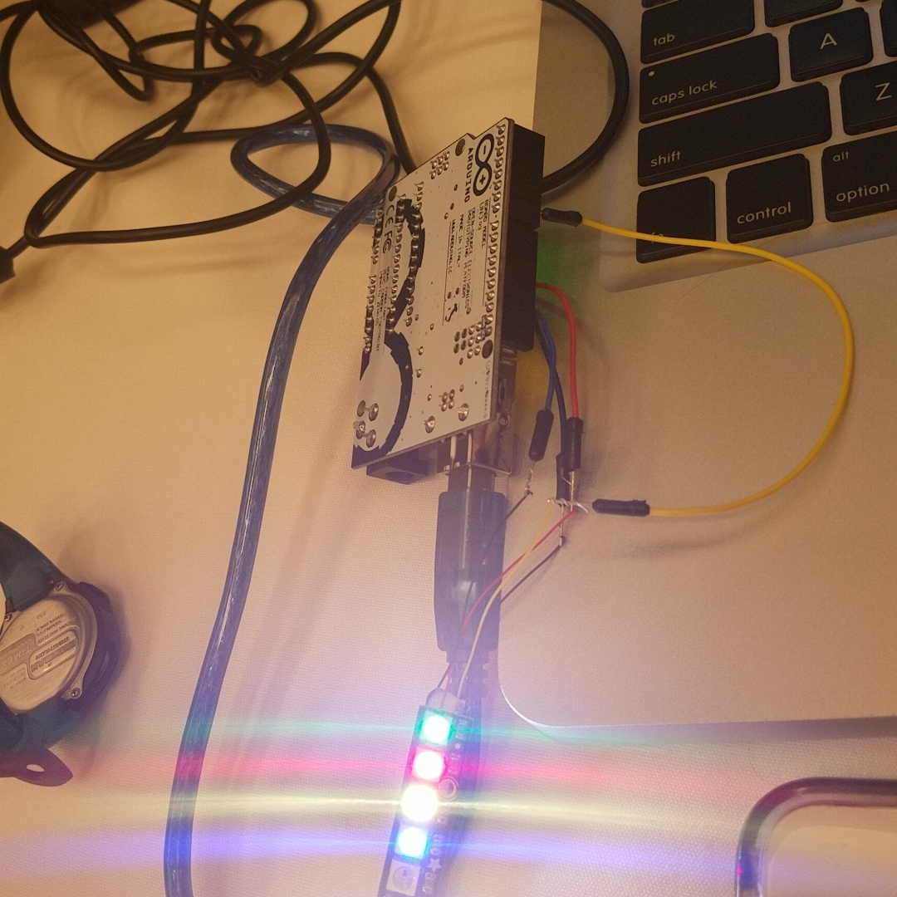

My journey into hackathons and how that inspired this project

My first hackathon was during the Capital One Software Engineering Summit.
I had heard of hackathons before but I was intimidated and from the outside looking in, it seemed weird.
Thankfully, we were required to participate in one during the Summit and it was a magical experience for me.
My most memorable experience during the event was experiencing the growth of my dynamic team in the span of 24 hours.
We were the team of majority girls (+Josh) and we picked the least popular customer group to target in our project.
Our group chose to create a financial app for the senior population that created more trust between them and Capital One banking.
In particular, we built a simple LED to help them manage their bill due dates.

Fast forward through the stress and uncertainty of whether or not our project was "good enough", we were complimented by
the leadership team of judges and got a shout out for our empathetic research approach and unique target audience compared to the rest of the teams.
I left the Summit with a different meaning of "hackathon" and an obsession to go to more.
When I transitioned into my summer internship at Vanguard, I made sure to reach out to my manager to ask to participate in the company's event.
This experience created a deeper connection with myself and a group of interns (who are still my friends 3 years later) and a way to network with their corporate leadership team.
We worked with them to create an organizational tool to add onto their company's CrewNet profiles in order for employees to connect to the multiple community service events/groups that were invisible and creating problems.
After that summer, I went to 12 more hackathons during the school year. It was an experience! And having the opportunity to attend so many around the country & Canada helped me to observe a universal problem that a lot of students were experiencing.